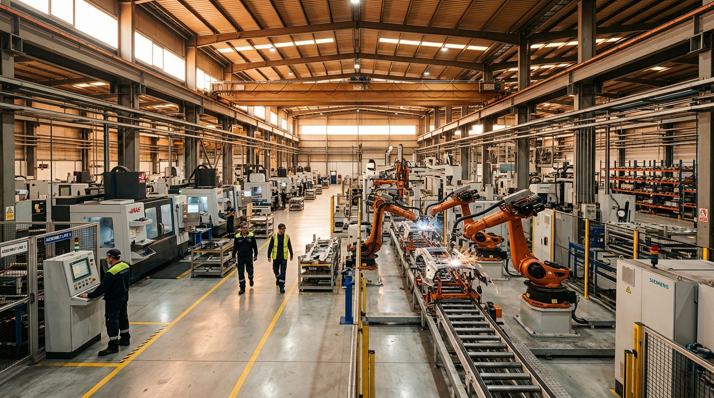
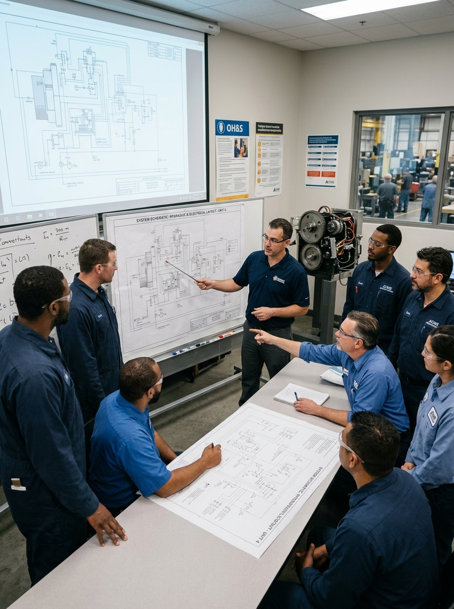
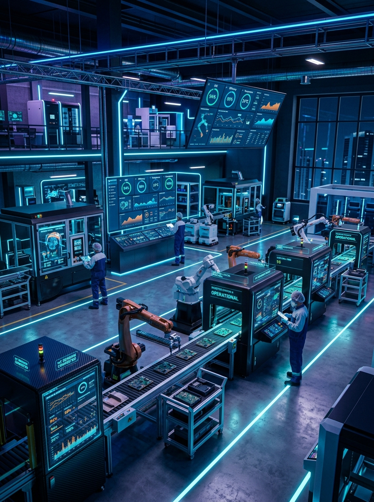
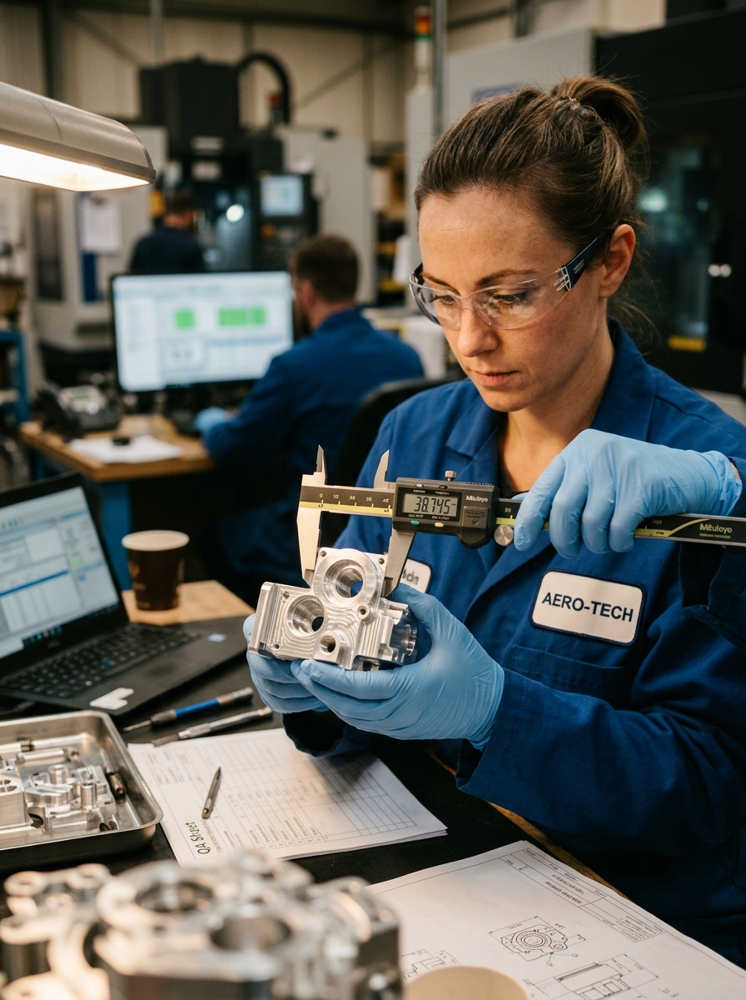

Manutenção Produtiva Total
Estratégia de gestão que transforma a manutenção em diferencial competitivo, integrando operadores, técnicos e liderança na eliminação sistemática de perdas rumo à quebra zero.

A Manutenção Produtiva Total (conhecida mundialmente pela sigla em inglês MPT — Total Productive Maintenance) é um sistema de gestão que busca maximizar a eficiência global dos equipamentos ao longo de todo o seu ciclo de vida.
A MPT rompe com o antigo paradigma de que a conservação é responsabilidade apenas da oficina mecânica ou elétrica. Na MPT, operação e manutenção trabalham em parceria diária para evitar paradas e defeitos.

A MPT orienta a fábrica rumo ao patamar de classe mundial através da consagrada Tríade dos Três Zeros:
A sustentação da metodologia é organizada em 8 pilares complementares que unem pessoas, processos e máquinas:
A MPT harmoniza a atuação diária do operador com a especialização técnica dos mantenedores:
"Da minha máquina cuido eu." Por estar ao lado do equipamento durante todo o turno, o operador é quem primeiro nota anomalias:
"Confiabilidade e engenharia." A equipe especializada atua de maneira programada para evitar paradas emergenciais:
Na MPT, consertar o sintoma não basta. A equipe se pergunta: "Qual é a causa raiz desse problema e o que faremos para ele nunca mais se repetir?"
A MPT categoriza as perdas industriais em três grupos essenciais para direcionar ações assertivas de bloqueio:
Alerta técnico: Taxas individuais aparentemente boas podem esconder perdas compostas de quase 30% da capacidade total da linha.
A tecnologia digital potencializa a MPT, mas não substitui a disciplina humana. Sensores inteligentes e algoritmos transformam dados em ações preditivas rápidas e precisas.

A Manutenção Produtiva Total não é um projeto passageiro, mas um modelo permanente de gestão que une disciplina técnica, respeito aos ativos e valorização das pessoas.
